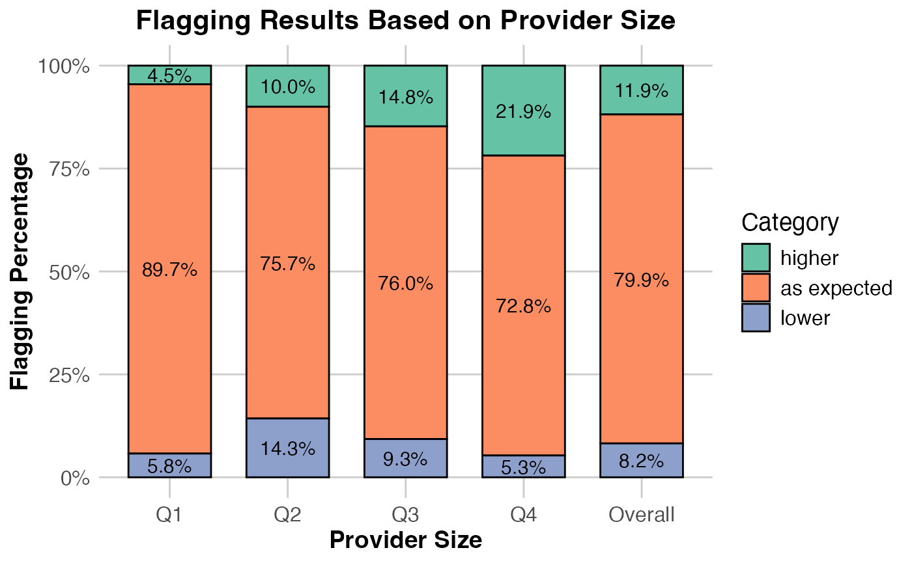
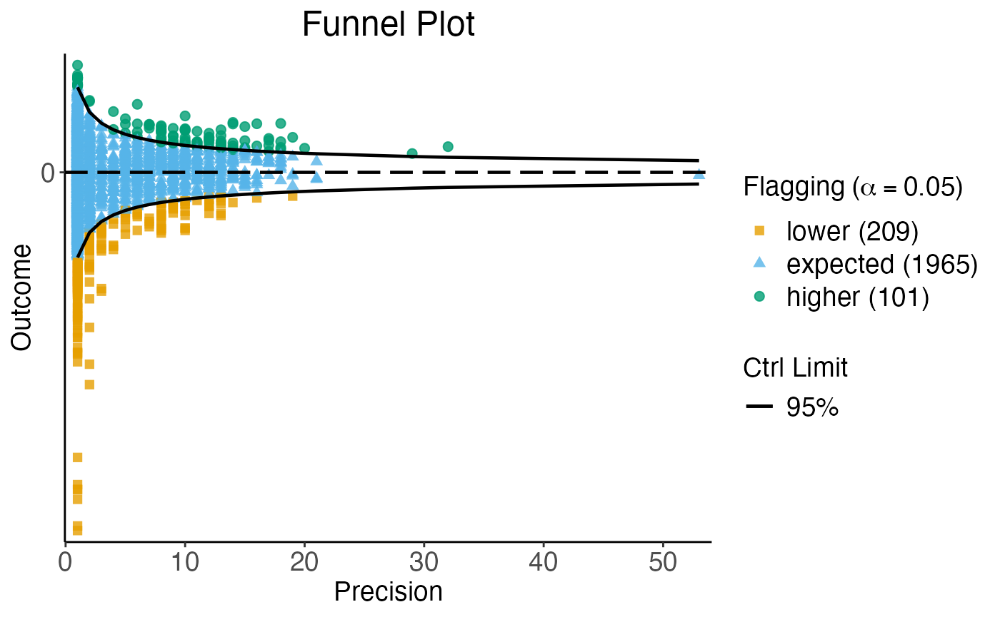

Introduction
The pprof software package is designed to provide
different risk-adjusted models for data with various types of outcomes,
specifically focusing on the field of provider profiling. In addition to
model fitting, the package equips a suite of functions for calculating
standardized ratios and rates, conducting statistical inference, and
generating various plots to aid in the interpretation of results.
Currently, the package supports logistic fixed effect models for binary
outcomes, as well as linear fixed effect and linear random effect models
for continuous outcomes. It is under ongoing development, with plans to
incorporate additional models and more robust testing methods.
This tutorial provides a brief overview of the package’s structure
and a detailed guide of how to utilize the various functions. Simulated
example data (ExampleDataBinary) with binary outcomes will
be used as an illustration, alongside a real data set with continuous
outcomes (ecls_data) to demonstrate its application with
continuous outcomes. Throughout the tutorial, we will cover the key
features and capabilities of pprof, presenting examples and
use cases to illustrate its functionality comprehensively.
Installation
require("devtools")
require("remotes")
remotes::install_github("UM-KevinHe/pprof", ref = "main")Package Workflow Overview
This section presents the structure and workflow of the
pprof package. Generally, for datasets with continuous
outcomes, either a fixed effect model or a random effect model can be
fitted, while for binary outcomes, the current version only supports the
fixed effect model. For the calculation of standardized measures, both
indirect and direct standardization methods are provided for all models.
Regarding hypothesis testing of provider effects, pprof
includes the flagging based on each provider’s performance, categorizing
them as 1 (statistically higher), 0 (as expected), or -1 (statistically
lower). Confidence intervals are provided for both provider effects and
standardized measures. Additionally, various visualizations are equipped
to facilitate interpretation of the results. These include caterpillar
plots for the confidence intervals of standardized measures, bar plots
showing flagging percentages overall and stratified by provider sizes,
and funnel plots for indirect standardized measures in fixed effect
models. These visualizations offer multiple perspectives for
understanding the results effectively.

Model Fitting
pprof package introduces three different fitting
functions: logis_fe for logistic fixed effect model,
linear_fe for linear fixed effect model, and
linear_re for linear random effect mode.
The simulated dataset ExampleDataBinary is used as an
example in this section.
library(pprof)
data(ExampleDataBinary)
outcome <- ExampleDataBinary$Y
covar <- ExampleDataBinary$Z
ID <- ExampleDataBinary$ID
data <- data.frame(outcome, covar, ID)Each model function supports three different ways to input data. Users have the flexibility to choose the one that best suits their data availability and convenience. Firstly, users can provide a formula and the whole dataset.
formula_fe <- as.formula("outcome ~ id(ID) + z1 + z2 + z3 + z4 + z5")
fit_fe <- logis_fe(formula = formula_fe, data = data, message = F)Additionally, users also input the whole dataset, along with the column names of the outcome vector, the covariate matrix/data frame, and the provider identifier vector.
colnames(data)
#> [1] "outcome" "z1" "z2" "z3" "z4" "z5" "ID"
Y.char <- colnames(data)[1]
Z.char <- colnames(data)[2:6]
ID.char <- colnames(data)[7]
fit_fe <- logis_fe(data = data, Y.char = Y.char, Z.char = Z.char, ID.char = ID.char, message = F)Finally, the function also accepts the outcome vector, the covariate matrix/data frame, and the provider identifier vector.
fit_fe <- logis_fe(Y = outcome, Z = covar, ID = ID, message = F)By default, each model fitting function automatically removes all
observations containing missing values. If users encounter data-related
issues, they can utilize our built-in function data_check
to perform data quality checks. This function can assist in examining
missingness, variation, correlation, and the variance inflation factor
(VIF) of variables to ensure data quality before fitting a model.
The logistic fixed effect model provides two algorithmic approaches:
the Serial Blockwise Inversion Newton (SerBIN) algorithm (See Logis
FE for more details) and the Block Ascent Newton algorithm. The
preferred method can be specified by setting the method
argument, allowing users to choose the algorithm that best fits their
computational needs and model requirements.
Standardized Measures
Based on the results obtained from the fitted model, users can easily
calculate direct or indirect standardized measures as per their specific
requirements. The SM_output function simply necessitates
the users to input the object returned from the model functions and
specify the desired type of measure. Additionally, the observed outcomes
and “expected” outcomes are included in case users wish to calculate
standardized measures under different definitions.
SR <- SM_output(fit_fe, stdz = "indirect")
head(SR$indirect.ratio)
#> Indirect_standardized.ratio
#> 1 0.9025369
#> 2 1.1081224
#> 3 0.8994107
#> 4 1.0742682
#> 5 0.9771412
#> 6 1.0311867
head(SR$indirect.rate)
#> Indirect_standardized.rate
#> 1 34.99262
#> 2 42.96346
#> 3 34.87141
#> 4 41.65088
#> 5 37.88513
#> 6 39.98055
head(SR$OE$OE_indirect)
#> Obs_provider Exp.indirect_provider Var.indirect_provider
#> 1 31 34.34763 8.009189
#> 2 16 14.43884 6.107131
#> 3 35 38.91437 11.132482
#> 4 39 36.30378 10.725251
#> 5 23 23.53805 8.296404
#> 6 34 32.97172 9.162980Hypothesis Testing for Provider Effects
The test function is designed to conduct hypothesis
testing for provider effects and identify outlier providers. It returns
a four-column dataframe, where the “flag” column indicates whether a
provider is flagged as an outlier. The other three columns provide the
p-values, corresponding test statistics, and the standard errors of
provider effects. Users have the flexibility to choose between two-sided
and one-sided tests by specifying the alternative argument.
In cases when the number of providers is very large, outputting all
results at once may become cumbersome. To address this, users can opt to
display results only for the providers of particular interest by setting
the parm argument to the corresponding provider ID. This
selective output feature makes it easier for users to focus on specific
providers without being overwhelmed by extensive data.
test(fit_fe, parm = c(16:20, 61:65))
#> flag p value stat
#> 16 -1 0.0299553164 -2.17068071
#> 17 0 0.0745112915 1.78346100
#> 18 -1 0.0361175315 -2.09560178
#> 19 0 0.5606615895 0.58185910
#> 20 0 0.9903105282 0.01214425
#> 61 1 0.0004267554 3.52296022
#> 62 0 0.0677680598 1.82654599
#> 63 0 0.3526406608 0.92947947
#> 64 0 0.3894835561 0.86055432
#> 65 0 0.1026006595 -1.63237430Hypothesis Testing for Covariate Coefficients
Additionally, we offer the summary function to provides
the test statistics for the covariate coefficients. The output dataframe
may include the estimates, standard errors, p-values, and confindence
intervals.
summary(fit_fe)
#> Estimate Std.Error Stat p value CI.Lower CI.Upper
#> z1 1.0512744 0.04179173 25.15508 0 0.9693641 1.133185
#> z2 1.0229572 0.04093213 24.99154 0 0.9427316 1.103183
#> z3 0.9918962 0.04035333 24.58028 0 0.9128051 1.070987
#> z4 1.0413031 0.04115101 25.30443 0 0.9606486 1.121958
#> z5 1.0930890 0.04173967 26.18825 0 1.0112808 1.174897Confidence Interval
Both the confidence intervals for provider effects and standardized
measures can be obtained from the function confint by
specifying the value of argument option. The function will
return a three-column data frame that provides the estimates, along with
the corresponding upper and lower bounds of the confidence
intervals.
confint(fit_fe, parm = c(55:60), option = "gamma")
#> gamma gamma.lower gamma.upper
#> 55 -1.4176768 -2.057409 -0.792812684
#> 56 -0.6624298 -1.239835 -0.091294432
#> 57 -0.6411525 -1.295789 -0.006435919
#> 58 -1.3264628 -1.966684 -0.699596625
#> 59 -0.8219975 -1.473821 -0.178134425
#> 60 -1.1748531 -1.834632 -0.526685839
confint(fit_fe, parm = c(80:85), option = "SM")
#> $CI.indirect_ratio
#> indirect_ratio CI_ratio.lower CI_ratio.upper
#> 80 0.6651076 0.4614515 0.8967515
#> 81 0.0000000 0.0000000 1.1422604
#> 82 1.0857752 0.8814482 1.3007155
#> 83 1.0965577 0.9548462 1.2299472
#> 84 1.1255589 0.9578273 1.2922141
#> 85 1.1540167 0.9741097 1.3352526
#>
#> $CI.indirect_rate
#> indirect_rate CI_rate.lower CI_rate.upper
#> 80 25.78715 17.89112 34.76831
#> 81 0.00000 0.00000 44.28703
#> 82 42.09702 34.17498 50.43056
#> 83 42.51508 37.02073 47.68678
#> 84 43.63949 37.13631 50.10095
#> 85 44.74284 37.76760 51.76961Plotting
The caterpillar plot is a type of visualization used to display
confidence intervals for estimated parameters, often employed to
identify outliers or assess the variability across groups or providers.
In pprof, the caterpillar_plot function is
used to generate such plots, providing a clear representation of
standardized measures and their associated confidence intervals. To use
this function, users need to input a dataframe returned by our built-in
confint function, with the option argument set
to “SM” to ensure standardized measures are visualized.
CI_SM <- confint(fit_fe, option = "SM")
caterpillar_plot(CI_SM$CI.indirect_ratio, use_flag = T, errorbar_width = 0.5, errorbar_size = 1)Additionally, a bar plot is also provided to visualize the overall
flagging percentage, as well as the percentages stratified by provider
sizes. The providers are divided into a specified number of groups, set
by the group_num argument, where the number of providers is
approximately equal across all groups. The flagging percentage for each
group is then displayed, giving insights into variations in provider
performance. For this plot, users need to input the dataframe returned
from the test function. This visualization offers an
effective way to interpret the performance distribution across different
provider groups.
The current version of pprof also supports the funnel
plot through the plot function, an effective graphical tool
for identifying healthcare providers with unusual performance. This
function can visualize the indirect standardized differences for the
linear fixed effect model and the indirect standardized ratios for the
logistic fixed effect model, offering valuable insights into variations
in provider performance.
plot(fit_fe, alpha = 0.05)Real Data Example
Early Childhood Longitudinal Study (ECLS) Dataset
In this section, we further show the usage of the package by analyzing the Early Childhood Longitudinal Study (ECLS) dataset. We use fifth-grade cross-sectional data, focusing on students’ mathematical assessment scores as the continuous outcome, with the continuous predictor household income and the categorical predictor gender. Due to the small number of observations for some schools, we fit the model using all available observations but exclude schools with fewer than five records when generating caterpillat plot and bar plot. This ensures a more reliable and interpretable graphical representation of the results.
data(ecls_data)
formula_ecls <- as.formula("Math_Score ~ Income + id(School_ID) + Child_Sex")
fit_ecls <- linear_fe(formula = formula_ecls, data = ecls_data)
#> Input format: formula and data.
obs_counts <- table(ecls_data$School_ID)
schools_with_5_or_more <- as.numeric(names(obs_counts[obs_counts >= 5]))
# Caterpillar Plot
CI_ecls <- confint(fit_ecls, parm = schools_with_5_or_more)
caterpillar_plot(CI_ecls$CI.indirect, use_flag = T)
# Funnel Plot
plot(fit_ecls, alpha = 0.05)